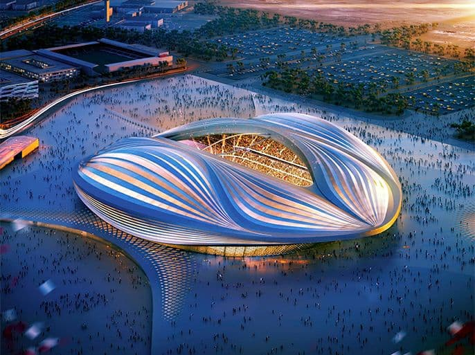
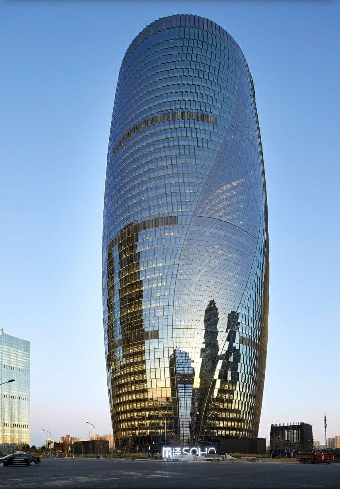

زها حديد
مهندسة معمارية
- 

- 
زُها حديد واسمها الكامل زُها محمد حسين حديد اللهيبي، هي معمارية عراقية بريطانية، وُلدت في بغداد لأسرة موصلية الأصل يوم 31 أكتوبر 1950 وتُوفيت في ميامي يوم 31 مارس 2016. والدها محمد حديد، كان أحد قادة ا لحزب الوطني الديمقراطي العراقي والوزير الأسبق للمالية العراقية بين عامي 1958-1960م. وظلت زها تدرس في مدارس بغداد حتى انتهائها من دراستها الثانوية، وحصلت على شهادة الليسانس في الرياضيات من الجامعة الأميركية في بيروت 1971،ولها شهرة واسعة في الأوساط المعمارية الغربية، وحاصلة على وسام التقدير من الملكة البريطانية.
تخرجت عام 1977 من الجمعية المعمارية بلندن، وعملت كمعيدة في كلية العمارة 1987، وانتظمت كأستاذة زائرة في عدة جامعات في دول أوروبا وبأمريكا منها هارفرد وشيكاغو وهامبورغ وأوهايو وكولومبيا ونيويورك وييل. وعندما سئلت عن أي نصب تذكاري بغدادي تفضل أن يكون "رمزًا إعلاميًا لبغداد" لم تتردد إنها ترى نصب "كهرمانة" الأفضل لأنه يرمز لعصر الرشيد الذهبي لبغداد وقصص ألف لية وليلة وهذا مرتبط أساسًا بالمخيال الجمعي العالمي لبغداد، ونصب الشهيد لانه الأكثر تعبيرًا عن شموخ وتضحيات العراقيين في التاريخ المعاصر،
التزمت زها بالمدرسة التفكيكية التي تهتم بالنمط والأسلوب الحديث في التصميم، ونفذت 950 مشروعًا في 44 دولة.وتميزت أعمالها بالخيال، حيث إنها تضع تصميماتها في خطوط حرة سائبة لا تحددها خطوط أفقية أو رأسية. كما تميزت أيضًا بالمتانة، حيث كانت تستخدم الحديد في تصاميمها. وتُعد مشاريع محطة إطفاء الحريق في ألمانيا عام 1993، مبنى متحف الفن الإيطالي في روما عام 2009 والأمريكي في سينسياتي، جسر أبو ظبي، ومركز لندن للرياضات البحرية، والذي تم تخصصيه للألعاب الأولمبية التي أقيمت عام 2012، محطة الأنفاق في ستراسبورج، المركز الثقافي في أذربيجان، المركز العلمي في ولسبورج، محطة البواخر في سالرينو، ومركز للتزحلق على الجليد في إنسبروك، ومركز حيدر علييف الثقافي في باكو عام 2013 من أبرز المشاريع التي أوصلت حديد بجدارة إلى الساحة العالمية
نالت العديد من الجوائز الرفيعة والميداليات والألقاب الشرفية في فنون العمارة، وكانت من أوائل النساء اللواتي حصلن على جائزة بريتزكر في الهندسة المعمارية عام 2004، وهي تعادل في قيمتها جائزة نوبل في الهندسة وجائزة ستيرلينج في مناسبتين؛ وحازت وسام الإمبراطورية البريطانية والوسام الإمبراطوري الياباني عام 2012. وحازت على الميدالية الذهبية الملكية ضمن جائزة ريبا للفنون الهندسية عام 2016، لتصبح أول امرأة تحظى بها. وقد وصفَت بأنها أقوى مُهندسة في العالم، وكانت ترى أن مجال الهندسة المعمارية ليس حكرًا على الرجال فحسب،فقد حققت إنجازات عربية وعالمية، ولم تكتفِ بالتصاميم المعمارية فحسب بل صممت أيضًا الأثاث وصولًا بالأحذية، وحرصت أسماء عالمية مرموقة على التعاون مع حديد، ما جعل منتقديها يطلقون عليها لقب ليدي جاجا بعالم الهندسة، وقد اختيرت كرابع أقوى امرأة في العالم عام 2010
تُوفيت في 31 مارس عام 2016 عن عُمر ناهز 65 عامًا، إثر إصابتها بأزمة قلبية في إحدى مستشفيات ميامي بالولايات المتحدة، كما أعلن مكتبها في لندن، حيث قال:«بحزن كبير تؤكد شركة زها حديد للهندسة المعمارية أن زها تُوفيت بشكل مفاجىء في ميامي هذا الصباح، وكانت تعاني من التهاب رئوي أصيبت به مطلع الأسبوع وتعرضت لأزمة قلبية أثناء علاجها في المستشفى»